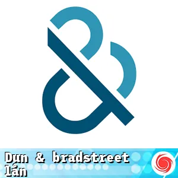

Lån som använder Dun & Bradstreet innebär att långivare utför kreditkontroller genom detta kreditupplysningsföretag. Dun & Bradstreet fokuserar främst på företagsinformation, men används även för privatpersoner.
Vi kan därför tipsa dig om lån med D&B som undviker UC-förfrågningar och bevarar ditt kreditbetyg hos andra aktörer.

Särskilda lån
Frågor och Svar []
Långivaren med högst beviljandegrad (exempelränta 28.95 %) för april 2025 är Brixo
Dun & Bradstreet är en globalt erkänd tjänsteleverantör som specialiserar sig på företagsinformation och kreditbedömning. Deras lånsystem fungerar genom att använda av dataanalys och kreditbedömningar för att hjälpa företag att få tillgång till kapital samtidigt som man minimerar riskerna för långivare.
Dun & Bradstreet erbjuder en variation av lån som kan skräddarsys för specifika behov. Detta inkluderar utrustningslån, driftlån och expansion lån, vilket gör det möjligt för företag att finansiera olika delar av sin verksamhet.
D&B:s kreditbedömning ger långivare en detaljerad inblick i företagets finansiella historia och kreditvärdighet. En god kreditbedömning ökar chanserna för godkännande av lån och kan leda till bättre lånevillkor.
Ja, lån genom D&B kan komma med olika avgifter och kostnader. Vanligtvis baseras dessa avgifter på lånets typ, belopp och löptid, så det är viktigt för företag att noggrant granska villkoren innan de ansöker.
D&B använder avancerad teknologi och dataanalys för att optimera utlåningsprocessen. Genom att digitalisera många steg kan de minska handläggningstiden och ge företag snabba beslut på sina låneansökningar.
Riskerna inkluderar att företag kan ta på sig mer skuld än de kan hantera, vilket kan påverka deras ekonomiska stabilitet. Dessutom kan blir långivare missnöjda om företag missar betalningar, vilket kan skada deras kreditvärdighet.
Ja, nystartade företag kan ansöka om lån via Dun & Bradstreet, men de kan behöva uppvisa en stark affärsplan och finansiell plan för att öka sina chanser till godkännande. Långivare är oftast mer försiktiga när det gäller nystartade verksamheter.
D&B:s tjänster ger små och medelstora företag en bättre möjlighet att få tillgång till finansiering som de annars kanske inte skulle kunna få. Genom att erbjuda alternativa kreditbedömningar kan de hjälpa företag att växa och klara av ekonomiska utmaningar.
Dun & Bradstreet fokuserar på att använda data och precis kreditbedömning för att ge låntagare en snabbare och mer flexibel låneupplevelse. Traditionella långivare tenderar att ha striktare krav och längre ledtider, vilket kan vara utmanande för företag som behöver pengar snabbt.
Ja, ansökan om lån via D&B kan påverka företagets kreditvärdighet, särskilt om det leder till kreditförfrågningar. Det är avgörande att hantera lånen ansvarsfullt och betala i tid för att bibehålla en god kreditprofil.
Topplista Dun & Bradstreet
Topplista för rekommenderade och utvalda Dun & Bradstreet 2024. För hjälp att få okomplicerat Dun & Bradstreet med hög servicenivå tipsar vi om följande:
Banky – Utgår från din förmåga – Lånet betalas ut inom 24h
Brixo – Hur mycket vill du låna? – Utbetalning samma dag som ansökan beviljas
Extralånet – Ett bra extra lån åt alla – Utbetalning samma dag
Nätlån – Låna pengar snabbt och säkert – Inom 1-2 dagar
Cashbuddy – Skapar möjligheter i vardagen – Utbetalning efter godkänt autogiro.
Merax – Hur mycket vill du ta ut? – Oftast samma dag
Krediten har inga avgifter. Krediten har inga avgifter. Rörlig nominell årsränta är 28,95 % och den effektiva räntan är 33,1 %. En exempelkredit på 10 000 kr som återbetalas med 970 kr per månad under 12 månader har en total kostnad om 1 640 kr. Löptid från 6 till 52 månader vid maximalt initialt uttag, lägsta möjliga månadsvisa återbetalning och inga ytterligare uttag.
30 000 kr i annuitetslån på 4 år med 27,95% nominell ränta, 31,82% effektiv ränta, kostar 1 045 kr/mån (48 ggr). Att återbetala: 50 160 kr inkl. alla avgifter.
30 000 kr i annuitetslån på 4 år med 27,95% nominell ränta, 31,82% effektiv ränta, kostar 1 045 kr/mån (48 ggr). Att återbetala: 50 160 kr inkl. alla avgifter.
25.000 kr på 5 år. Bunden årsränta: 26,05 %. Effektiv årsränta: 29,40 %. Månadskostnad: 749 kr (60 ggr). Totalt att återbetala: 44.955 kr. (Uppdaterat 2018-09-01).
Krediten har 43,98 % rörlig nominell årsränta, 475 kr i uppläggningsavgift och 25 kr månatlig administrationsavgift. En exempelkredit på 10 000 kr som återbetalas med 1 120 kr per månad under 12 månader har en effektiv årsränta på 76,8 %. Det innebär en total kostnad för krediten om 3 440 kr. Löptid från 8 till 62 månader vid maximalt initialt uttag, lägsta möjliga månadsvisa återbetalning och inga ytterligare uttag.
Rekommenderade långivare - Dun & Bradstreet
Jämförelse av utvalda långivares exempelräntor, kostnad och belopp
För jämförelse av Dun & Bradstreet tittar vi på lån som använder dun & bradstreet och hämtar räntor och kostnader från långivarnas egna exemel på vanliga kreditsituationer.
I tabellen kan vi bland annat se hur stora lån som är vanliga samt vilka fördelar långivaren kan erbjuda.
Scrolla tabellen
Trustpilot
Minbelopp
Maxbelopp
Exempelbelopp
Ränta från
Ränta till
Utbetalning
Startavgift
Aviavgift
Upplysning
Avgiftsfritt
-
20 000 kr
150 000 kr
50 000 kr
29 %
29 %
Lånet betalas ut inom 24h
0 kr
0 kr
Banky Dun & Bradstreet Fast ränta 29 %
Annuitetslån 5 år. Effektiv årsränta 29,97%. Ett lån på 50 000 kr kostar då 1 512 kr/mån (60 avbetalningar), dvs totalt 83 675 kr. Ingen uppläggningsavgift eller aviavgifter. 26,50% nominell ränta. Räntan är rörlig. Banky samarbetar med Nordiska Kreditmarknadsaktiebolaget.
Krediten har inga avgifter. Krediten har inga avgifter. Rörlig nominell årsränta är 28,95 % och den effektiva räntan är 33,1 %. En exempelkredit på 10 000 kr som återbetalas med 970 kr per månad under 12 månader har en total kostnad om 1 640 kr. Löptid från 6 till 52 månader vid maximalt initialt uttag, lägsta möjliga månadsvisa återbetalning och inga ytterligare uttag.
30 000 kr i annuitetslån på 4 år med 27,95% nominell ränta, 31,82% effektiv ränta, kostar 1 045 kr/mån (48 ggr). Att återbetala: 50 160 kr inkl. alla avgifter.
30 000 kr i annuitetslån på 4 år med 27,95% nominell ränta, 31,82% effektiv ränta, kostar 1 045 kr/mån (48 ggr). Att återbetala: 50 160 kr inkl. alla avgifter.
25.000 kr på 5 år. Bunden årsränta: 26,05 %. Effektiv årsränta: 29,40 %. Månadskostnad: 749 kr (60 ggr). Totalt att återbetala: 44.955 kr. (Uppdaterat 2018-09-01).
Krediten har 43,98 % rörlig nominell årsränta, 475 kr i uppläggningsavgift och 25 kr månatlig administrationsavgift. En exempelkredit på 10 000 kr som återbetalas med 1 120 kr per månad under 12 månader har en effektiv årsränta på 76,8 %. Det innebär en total kostnad för krediten om 3 440 kr. Löptid från 8 till 62 månader vid maximalt initialt uttag, lägsta möjliga månadsvisa återbetalning och inga ytterligare uttag.
[april 2025]
Statistik (antal Dun & Bradstreet)
Utvalda lån
6
Lägsta belopp
3 000 Kr
Högsta belopp
150 000 Kr
Snitt exempelbelopp
25 833 Kr
Lägst ränta
20,0 %
Högst ränta
44,0 %
Startavgift
2
Aviavgift
2
Anmärkning OK
6
Räntespann Dun & Bradstreet []
Banky
Brixo
Extralånet
Nätlån
Cashbuddy
Merax
Möjligheter med D&B lån idag
I en dynamisk affärsvärld där tillgång till kapital ofta är nyckeln till framgång, erbjuder Dun & Bradstreet innovativa lånomlagningar för företag som strävar efter tillväxt och stabilitet.
En möjlighet för de som har svårt att navigera i den traditionella finansieringsdjungeln, är D&B:s lösningar både bärande och tillgängliga.
En smart investering kräver kloka val och rätt information
Dun & Bradstreet tillhandahåller omfattande kreditbedömningar som möjliggör för långivare att fatta välgrundade beslut. Genom att använda deras tjänster minimerar företag riskerna och underlättar låneprocessen.
Finansiering som stärker ditt företag
Det ger mindre och medelstora företag en konkurrensfördel som de annars kanske skulle sakna.
Med en rad lånealternativ anpassade för specifika behov kan företag anpassa sin finansiering för att stödja expansion, utrustning eller driftkostnader.
D&B gör det enklare för företagare att accessa pengar snabbt och effektivt.
Det handlar inte bara om att få ett lån; det handlar om att bygga en starkare grund för framtiden. Genom att utnyttja Dun & Bradstreets tjänster kan företagare navigera finansieringslandskapet med större självsäkerhet.
Password till din företagsframtid finns inom räckhåll, och möjligheterna är oändliga med D&B som partner.
Allt om D&B-lån
Lån som använder Dun & Bradstreet
Lån med hjälp av Dun & Bradstreet (D&B) har blivit ett viktigt verktyg för företag som söker finansiering. Den uppstod ur behovet att kunna utvärdera krediter på ett effektivare och mer informerat sätt. D&B tillhandahåller en grundlig och nyanserad kreditupplysningstjänst som gör det enklare för långivare att bedöma företagskunder. Detta har resulterat i en rad fördelar, särskilt för små och medelstora företag som ofta kan ha en svag kreditprofil enligt traditionella normer.
D&B:s kraftfulla verktyg för kreditbedömning minimerar riskerna för långivare och gör att företag kan ansöka om lån med större möjligheter till godkännande. Genom att möjliggöra en mer detaljerad granskning av företagets ekonomiska ställning hjälper Dun & Bradstreet företag att få tillgång till den finansiering de behöver för expansion, investeringar eller för att hantera driftkostnader.
En annan aspekt av lån via D&B är att de erbjuder en rad olika lånetyper, vilket gör det lättare för företagare att välja vilket lån som bäst passar deras behov. Dessa kan inkludera olika låneformer, såsom:
Typ av lån
Beskrivning
Expansion
Finansiera tillväxt och utveckling av företaget.
Utrustningslån
Inköp av ny eller begagnad utrustning.
Driftlån
Stödja dagliga kostnader som löner och leverantörsskulder.
Med så många alternativ kan företagare skräddarsy sina finansieringslösningar för att passa sina specifika behov. Att använda D&B:s tjänster bidrar också till en mer effektiv och snabbare låneprocess, vilket ger låntagare möjlighet att få ut pengar när de verkligen behöver dem. Genom att koppla samman långivare och företag på ett mer transparent sätt ökar möjligheterna för framgångsrika affärer.
Kreditupplysningar från Dun & Bradstreet
Kreditupplysningar från Dun & Bradstreet (D&B) erbjuder en grundlig och detaljerad insikt i företags kreditvärdighet och finansiella historia. Genom att använda D&B:s tjänster kan företag få en djupare förståelse för sina kunder och affärspartners, vilket är ovärderligt när de fattar beslut om kredit eller affärstransaktioner. D&B:s databas innehåller omfattande upplysningar, vilket möjliggör en mer precis bedömning av potentiella affärspartner.
En kreditupplysning fungerar som en bedömning av riskscenarier och kan innefatta olika kreditparametrar, som betalningshistorik, nuvarande skulder och årliga intäkter. Genom att analysera dessa faktorer kan långivare minimera risken för obetalda fakturor, vilket i sin tur förbättrar företagets ekonomiska stabilitet. Fördelen med D&B:s system är att de även erbjuder historiska data som gör det möjligt för företag att se trender och förändringar över tid.
Några fördelar med kreditupplysningar från D&B innefattar:
En detaljerad översikt av företagsstatus och kreditvärdighet, vilket ger en klar bild av potentiella affärspartner.
Ökad säkerhet vid kreditgivning, vilket minskar risken för finansiella förluster.
Snabb och effektiv process för att få och analysera relevant kreditinformation.
Kreditupplysningar från Dun & Bradstreet är inte bara avgörande för att öka säkerheten vid affärstransaktioner; de erbjuder också insikter som är viktiga för strategisk planering och tillväxt. Företag kan identifiera de mest lönsamma kunderna och justera sina erbjudanden baserat på noggrant insamlad data. Denna typ av analys skapar en mer dynamisk affärsmiljö, där företag kan anpassa sina strategier för att möta marknadens krav och möjligheter.
Att ansöka om lån via Dun & Bradstreet (D&B) erbjuder företag en strukturerad och smidig väg till finansiering. D&B:s plattform är utformad för att ge både nyetablerade och etablerade företag enkel och snabb tillgång till olika lånealternativ. Detta är särskilt viktigt för företag som står inför utmaningar och behöver kapital för att driva sin verksamhet framåt.
Ansökningsprocessen hos D&B är användarvänlig och intuitiv, vilket underlättar för företagare att fylla i sina låneansökningar. Låntagare får möjlighet att specificera sina behov och ge relevant information om sin verksamhet, såsom finansiell historik och affärsutsikter. Det snabba svarandet från långivare innebär att företag kan få sina lånebesked inom kort tid, vilket gör att de kan utnyttja affärsmöjligheter när de uppstår.
För att maximera chanserna till godkännande av lån är det viktigt att vara transparent och välorganiserad i sin ansökan. Genom att presentera en tydlig översikt av företagets ekonomi och varför det är i behov av lån, kan låntagare stärka sin trovärdighet och öka möjligheterna för godkännande. D&B:s kreditupplysningar ger långivare en tydlig inblick i företagets betalningshistorik, vilket är en huvudkomponent vid bedömning av risk och återbetalningsförmåga.
Vid ansökningsprocessen erbjuder D&B företag möjligheten att välja mellan olika lånetyper, anpassade efter sina specifika behov. Detta inkluderar både kortfristiga lån och mer långsiktiga finansieringsalternativ. Med rätt förberedelser och korrekt information kan företagare dra nytta av den trygghet och insikt som D&B:s tjänster erbjuder, samtidigt som de navigerar den komplexa finansieringslandskapet.
Vad ingår i kreditupplysning
En kreditupplysning från Dun & Bradstreet är en omfångsrik och detaljerad rapport som innehåller vital information för företagare och långivare. Denna information är nödvändig för att göra informerade lånebeslut och bedöma kreditvärdighet. Kunskap om vad som ingår i en kreditupplysning kan hjälpa företagare att förbereda sig inför en eventuell låneansökan och stärka deras chanser att lyckas.
Den typiska kreditupplysningen innehåller följande komponenter:
Personliga uppgifter: Grundläggande identifikationsinformation såsom namn, adress och eventuellt personnummer.
Folkbokföringsuppgifter: Information om aktuell folkbokföringsadress.
Inkomst och taxeringsuppgifter: Redovisad inkomst från de senaste åren, vilket ger en bild av låntagarens ekonomi.
Kreditbetyg: En sammanfattning av låntagarens kreditvärdighet, baserat på betydelsefull data och analys.
Betalningsanmärkningar: Registrerade betalningsproblem som kan påverka kreditvärdigheten.
Skuldsättning: Det totala beloppet av utestående lån och krediter.
Betalningshistorik: Historiska betalningar och eventuella förseningar som har inträffat.
Tidigare kreditförfrågningar: Registreringar av andra kreditupplysningar som har begärts under en viss tidsperiod.
Dessa faktorer hjälper långivare att bedöma en låntagares ekonomiska stabilitet och pålitlighet. Kredit scoring, som är en central del av kreditbedömning, bildas av dessa parametrar och påverkar även lånevillkoren, inklusive räntesatser och lånebelopp. Genom att vara medveten om vad som ingår i en kreditupplysning kan företagare ta proaktiva steg för att förbättra sin kreditvärdighet, vilket kan öppna dörrar till bättre lånealternativ. Hela kreditupplysningen fungerar som en crucial komponent för företagare, och att ha en bra översikt av sin ekonomi ökar odds för framgångsrika låneansökningar.
Betalningshistorik och inkomstnivå
Betalningshistorik och inkomstnivå är avgörande faktorer när det kommer till att säkerställa en god kreditvärdighet hos Dun & Bradstreet (D&B). Företagare som vill få lån måste upprätthålla en konsekvent och positiv betalningshistorik, vilket uttrycker till långivare att man är en pålitlig låntagare. Betalningshistoriken speglar hur finansbolaget har hanterat tidigare åtaganden, inklusive eventuella missade eller försenade betalningar.
Långivare ser särskilt på följande faktorer:
Betalningsanmärkningar: Obetalda skulder och registrerade betalningsproblem kan allvarligt påverka en persons möjlighet att få lån.
Stabil inkomst: Att ha en konsekvent och tillräcklig inkomst, baserat på de senaste åren av skattedeklarationer, ger långivare en insyn i betalningskapaciteten. En stabil inkomst ökar möjligheterna för lån.
Kreditrapporter från D&B innehåller information om hur låntagaren har hanterat sina lån och krediter i det förflutna, vilket påverkar villkoren som erbjuds. Ju mer stabil betalningshistorik och hög inkomst du har, desto mer förmånligt kan lånet bli. Långivare benämner ofta kunder med svagare kreditvärdighet som en högre risk, vilket resulterar i högre räntor och mindre fördelaktiga lånevillkor.
För många företagare är det också viktigt att kunna kommunicera öppet med långivare. Om en företagsägares ekonomiska situation plötsligt förändras, kan det vara till hjälp för att bibehålla en sund kreditprofil. Att upprätta god kommunikation kan också leda till förhandlingar om bättre lånevillkor och möjligheter att få hjälp med svårigheterna i betalningarna.
Genom att hålla koll på sin egen betalningshistorik och noggrant övervaka sin inkomst kan låntagare i hög grad förbättra sina chanser att få lån och därmed nå sina affärsmål. Genom att proaktivt hantera sin ekonomi och sitt betalande kan företagare lyfta fram sig som stabila, pålitliga låntagare för långivare.
Kreditbetyg och kreditvärdighet spelar en central roll vid ansökan om lån, oavsett om det handlar om små lån eller större investeringar. En kreditupplysning från Dun & Bradstreet (D&B) ger en entydig bild av ens ekonomiska status. För att förbättra sin kreditvärdighet bör företagare fokusera på att upprätthålla en positiv betalningshistorik och en sund hantering av skulder. D&B använder en scoringmodell som rangerar kreditvärdigheten mellan 0 och 10 där högre siffror indikerar lägre risk för långivaren.
Det finns flera nyckelfaktorer som påverkar kreditbetyget:
Betalningshistorik: En nyckelfaktor som visar på tidigare betalningar och eventuella förändringar.
Skuldsättning: Kopplingen mellan totala skulder och inkomst är en kritisk aspekt i kreditbedömningen. Hög skuldsättning kan sänka kreditbetyget.
Inkomst och anställning: En stabil inkomstkällare med regelbundet arbete bidrar till en positiv kreditbedömning och ökar chanserna till lån.
Ett kreditbetyg mellan 8 och 10 anses vara utmärkt, medan ett betyg under 4 kan leda till avslag på ansökan. Långivare ser på den så kallade ”credit utilization”, vilket är andelen utnyttjad kredit jämfört med den tillgängliga krediten; hög utnyttjad kredit kan påverka dina låneansökningar negativt.
Vidare är det av vikt att vara medveten om att för många kreditupplysningar under en kort tidsperiod kan påverka kreditbetyget negativt. Därför är det en god idé att noggrant planera och optimera förfrågningar innan du ansöker om lån.
För att building ett stabilt kreditbetyg och framtida finansiella möjligheter, måste företagare ta aktiva steg mot att förbättra sin kreditvärdighet. Genom att förstå hur D&B:s modeller fungerar och de faktorer som påverkar kreditbetyg kan du positionera dig för att få framgångsrika finansieringsalternativ.
Skillnader mellan D&B och UC
När man diskuterar kreditupplysningar är det viktigt att förstå skillnaderna mellan Dun & Bradstreet (D&B) och Upplysningscentralen (UC). D&B fokuserar på företagskrediter och erbjuder en djupare insikt i affärers kreditvärdighet, medan UC riktar sig främst mot privatpersoner och ger en översikt över konsumenternas kreditinformation. Denna skillnad är särskilt relevant för företag som söker lån eller finansiering.
En av de mest signifikanta skillnaderna ligger i kreditbedömningsmodellerna som används. D&B har en scoringmodell som klassificerar kreditvärdighet mellan 0 till 10, där lägre siffror indikerar högre risk. Detta hjälper långivare att snabbt bedöma risken innan de beviljar lån. Å andra sidan har UC en kreditbetygsskala kopplad till en kreditrapport, vilket gör att långivare kan få en översikt av konsumentens ekonomiska situation, inklusive skulder och betalningshistorik, men det kan vara mer begränsat för affärsaktörer.
D&B:s rapporter ger också information om företagets registrerade omsättning och andra affärsrelaterade fakta, vilket ger en helhetsbild av företagets ekonomiska hälsa. UC å sin sida erbjuder mer av en konsumentsyn och denna är kanske inte alltid tillräcklig för företag som söker större lån eller mer komplexa finansieringslösningar.
Databaserna som används av D&B och UC skiljer sig också åt. D&B samlar information från en mängd olika källor, både offentliga och privata, vilket resulterar i en mer omfattande databas och mer exakt information i sina rapporter. UC:s databas har en mer begränsad datakälla, vilket kan leda till en brist på detaljer i kreditbedömningarna.
Att förstå dessa skillnader är avgörande för företag och individer som söker låna pengar. Genom att veta vilket system respektive aktör använder kan man fatta mer välgrundade beslut rörande finansieringsalternativ. Genom att vara informerad om de specifika fördelarna och nackdelarna med både D&B och UC, kan företag maximera sina chanser till att få de lån som behövs för tillväxt och stabilitet.
Lån utan påverkan på kreditvärdigheten
Känslan av att kunna låna pengar utan att påverka sin kreditvärdighet är en eftertraktad möjlighet för många. Genom att använda tjänster som Dun & Bradstreet (D&B) kan företag enkelt begära en kreditupplysning utan att detta registreras eller negativt påverkar deras kreditbetyg. Detta ger dem en klarare insikt i sin ekonomiska situation utan att riskera deras framtida lånemöjligheter.
En betydande fördel med D&B:s kreditupplysningar är att antalet förfrågningar inte påverkar UC-Score, vilket gör dem till ett utmärkt val för företag som vill behålla kontrollen över sin kreditstatus. Många av dessa kreditupplysningar kan göras diskret, vilket möjliggör att långivare får en objektiv bild av företagets betalningsförmåga utan risk för att kreditbetyget sjunker.
För företag med lägre kreditvärdighet finns det flera alternativa långivare som är villiga att hjälpa till. Dessa långivare använder ofta D&B:s tjänster för att göra kreditupplysningar som inte registreras hos UC. Detta gör att företag med en svagare kreditprofil kan finna möjlighet till lån utan att skada sin kreditvärdighet. Man kan även hitta specialiserade lån, som snöskoterlån för fritidsaktiviteter eller korttidslån för akuta behov. Att vara välinformerad om tillgängliga alternativ är avgörande för att hitta lån som kan möta specifika behov.
Att välja rätt lån är avgörande för att bevara en god kreditstatus. Med rätt information kan företag navigera i låneverksamheten på ett smart sätt, undvika onödiga risker och säkerställa licensierade långivare för en hållbar kreditvärdighet. När fler alternativ som D&B blir tillgängliga, kan det vara lättare att hitta lösningar för att finansiera verksamheten utan negativa konsekvenser för den ekonomiska stabiliteten.
Jämför långivare och villkor
Att jämföra långivare och deras villkor är en avgörande del av låneprocessen, mer än någonsin tidigare. Det finns många finansiella alternativ tillgängliga som kan passa företagets specifika behov, så det har blivit vanligare att se nischbanker som fokuserar på särskilda segment av låntagare. Dessa banker erbjuder ofta lösningar som är skräddarsydda för just den kundbas de betjänar, vilket ger större möjlighet att hitta rätt lån.
När du ansöker om lån är det viktigt att noggrant granska villkoren från olika långivare. Att ta hänsyn till räntor, avgifter och återbetalningstider kan göra stor skillnad för företagets ekonomi på lång sikt. Vid valet av långivare är det också avgörande att förstå hur din kreditvärdighet påverkar dina alternativ. En svagare kreditprofil kan vara ett hinder för att få de mest fördelaktiga lånen; därför är det viktigt att vara väl förberedd.
Nischbanker är ofta mer flexibla när det gäller bedömningar av låneansökningar, vilket kan vara en stor fördel för dem som söker specifika lån, till exempel företagslån. Det finns också många online-tjänster som möjliggör jämförelse av lån. Genom att ange relevant information kan du snabbt se de olika alternativen som erbjuds och jämföra villkoren, vilket underlättar valet av det mest lämpliga lånet.
Att jämföra långivare kan spara både tid och pengar. Genom att ha kunskap om skillnaderna finns möjlighet att ta informerade beslut och öka chanserna för att få den bästa finansieringen till lägsta kostnad. Sammantaget är en medveten och strukturerad jämförelse av långivare en viktig strategi för att navigera i ett komplext ekonomiskt landskap.
Innan du lånar med D&B
Innan du lånar med Dun & Bradstreet (D&B) är det viktigt att genomgå en noggrann förberedelseprocess för att maximera dina chanser till framgång. D&B erbjuder en plattform för företagslån som spänner över flera olika typer och kan vara till stor hjälp för företagare som söker den rätta finansieringen. Först och främst, se över din kreditvärdighet; D&B arbetar med en scoringmodell från 0 till 10, där högre betyg oftast leder till enklare låneansökningsprocess.
Det är även avgörande att ha en tydlig och välutvecklad plan för hur lånet ska användas. Långivare, inklusive D&B, förväntar sig en genomarbetad affärsplan som klart visar på hur du avser att använda lånet för att generera intäkter. Det kan handla om investeringar i nya marknader, uppgraderingar av utrustning eller förbättrad marknadsföring.
Se även till att jämföra olika lånealternativ som D&B erbjuder. Olika lån kan ha varierande räntor, avgifter och återbetalningsvillkor, och det är viktigt att veta vad som erbjuds för att hitta den bästa passformen för just ditt företag. D&B:s verktyg för att hämta kreditupplysningar kan också ge en bättre överblick över din egen ekonomiska status och förbereda dig för eventuella frågor under analysen av låneansökan.
För att sammanfatta, för att maximera dina chanser att få ett lån med D&B bör du ha en solid kreditprofil, klargjorda användningsplaner för lånet och en god förståelse för de specifika villkor som erbjuds. Genom att förbereda noggrant kan du skapa en stark grund för ditt företags framtida framgång och navigera finansieringslandskapet med större säkerhet.
Fördelar med D&B-lån
Snabbare lånebeslut: Med Dun & Bradstreets effektiva tjänster kan företag få sina lånebesked på en bråkdel av tiden jämfört med traditionella bankprocesser. Det innebär att företagare snabbt kan agera på affärsmöjligheter utan att drabbas av långa väntetider.
Flexibla lånevillkor: D&B erbjuder en rad lånealternativ som kan skräddarsys efter varje företags specifika behov. Detta gör det möjligt för företag att anpassa lånebelopp, återbetalningstider och räntesatser så att de passar deras unika situation.
Förbättrad kreditvärdering: Genom att använda D&B:s kreditbedömning kan företag få en mer nyanserad bild av sin kreditvärdighet. Detta ger dem möjlighet att identifiera områden för förbättring, vilket kan leda till bättre lånevillkor i framtiden.
Ökad tillgång till kapital: D&B:s tjänster gör det enklare för små och medelstora företag att få tillgång till finansiering, vilket annars kan vara en utmaning. Detta öppnar dörrar för investeringar och tillväxt som företagen kanske inte hade möjlighet till med traditionella lånealternativ.
Detaljerad kreditinsikt: D&B:s plattform erbjuder djupgående analyser av företags kreditprofil och finansiella historia. Detta ger företag en solid grund för att fatta välinformerade beslut om framtida investeringar och kreditgivningar.
Minimerad risk: Genom att använda D&B:s grundade analyser kan långivare mer exakt bedöma kreditrisker. Detta minskar trycket på låntagare och gör det möjligt för företagen att fokusera på att växa sin verksamhet.
Stöttar olika affärsbehov: Oavsett om det handlar om expansion, utrustningsköp eller att täcka driftkostnader, erbjuder D&B lån för ett brett spektrum av affärsbehov. Detta gör att företag kan få den specifika finansiering de behöver för att lyckas.
Strategisk partnerskap: Att samarbeta med D&B innebär att företag får en pålitlig partner med omfattande branschkännedom. Detta kan ge företag en konkurrensfördel genom att erbjuda stora nätverksmöjligheter och resurser.
Ökad finansiell insyn: D&B:s transparenta kreditbedömningsprocess bidrar till att långivare och låntagare får en klar översikt över det ekonomiska landskapet. Detta skapar förtroende mellan parterna och främjar långsiktiga affärsrelationer.
Innovativa teknologiska lösningar: D&B använder avancerade teknologier och dataanalys för att optimera låneprocessen. Genom att kombinera teknik med finansiell expertis erbjuder de effektiva och välgrundade lösningar för företagsfinansiering.
Nackdelar med D&B-lån
Kostnaderna kan vara högre: Lån via Dun & Bradstreet kan ha högre avgifter och räntor jämfört med traditionella banklån. För företag som redan har en ansträngd ekonomi kan dessa extrakostnader påverka den totala lönsamheten negativt.
Krav på kreditupplysning: För att få lån via D&B krävs det en kreditupplysning, vilket kan påverka kreditvärdigheten. Även om detta ger långivare insyn i företagets ekonomi, kan det också begränsa möjligheterna för företag med redan svag kreditprofil.
Begränsad flexibilitet vid återbetalning: Vissa lån kan ha strikta återbetalningsvillkor som inte tillåter justeringar. Det kan vara svårt för företagare att hantera plötsliga ekonomiska förändringar som kan kräva flexibilitet i betalningarna.
Potentiellt snäva lånebelopp: Många lån erbjudna genom D&B kan vara begränsade till lägre lånebelopp, vilket kan vara en nackdel för företag med stora finansieringsbehov. Detta kan tvinga företag att söka ytterligare finansiering från andra källor, vilket kräver mer tid och resurser.
Komplex låneansökan: Ansökningsprocessen kan ibland vara komplicerad och tidskrävande. Företagare måste vara beredda på att presentera mängder av dokumentation och detaljerad information för att öka sina chanser till godkännande.
Risk för överbelåning: Det finns en risk att företag, i jakten på växt, tar på sig mer skuld än de kan hantera. Detta kan leda till finansiella problem och påverka företagets långsiktiga stabilitet och hälsoekonomi.
Begränsad tillgänglighet: Dun & Bradstreets produkter och tjänster kanske inte är tillgängliga för alla typer av företag, särskilt små eller nystartade företag. Detta kan utesluta många potentiella låntagare från att dra nytta av fördelarna med D&B:s lånesystem.
Potentiell negativ påverkan på kreditvärdighet: Om låntagare missar sina betalningar kan det påverka deras kreditvärdighet negativt och leda till att framtida låneansökningar avslås. En dålig kreditprofil kan bli en långvarig belastning för företagets ekonomiska framtid.
Begränsad information om långivare: Även om D&B har ett gott rykte, kan det ibland vara svårt att få en översikt över de långivare som använder deras system och deras specifika villkor. Detta kan skapa en osäkerhet för låntagare som vill noggrant välja rätt finansieringspartner.
Tekniska begränsningar: För företag som inte är tekniskt kunniga kan användningen av D&B:s plattform och sina verktyg kännas överväldigande. Detta kan leda till att företagare missar viktiga funktioner eller information som kan förbättra deras låneupplevelse.
Friskrivning: All information var korrekt vid publiceringstillfället. Räntor och avtalsvillkor förändras kontinueligt och därför kan långivarens villkor ha ändrats. LastOffer.net är inte en låneförmedlare, kreditmarknadsföretag eller långivare. För individuell vägledning hänvisar vi till en professionell lånerådgivare. LastOffer.net kan erhålla ersättning för länkar och hänvisningar till andra hemsidor, men vi förhåller oss objektiva till den information vi förmedlar. För frågor, funderingar eller påpekande om avvikelser, vänligen kontakta oss på info@lastoffer.net. Genom att använda vår webbplats accepterar du dessa villkor.